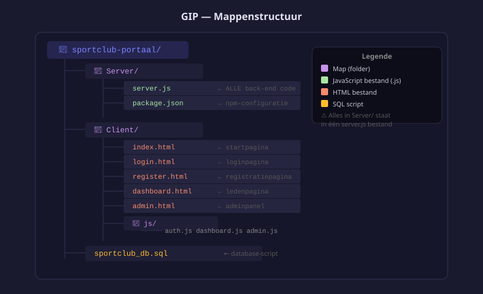

Project opzetten
- De mappenstructuur van het project uitleggen
- Een Node.js-project initialiseren met de nodige packages
- Een Express-server opzetten die de front-end bestanden serveert
- De applicatie lokaal starten via
http://localhost:3000 - Een functionele analyse invullen vóór je eerste commit
- Je werkzaamheden plannen met een taakoverzicht en tijdschatting
- Een werklog bijhouden terwijl je codeert
Je bouwt een webapplicatie voor een sportclub. Leden kunnen inloggen en zich inschrijven voor activiteiten. De admin beheert het activiteitenprogramma.
- Leden registreren en inloggen
- Activiteiten bekijken en inschrijven
- Admin kan activiteiten toevoegen, aanpassen en verwijderen
| Wat | Technologie |
|---|---|
| Front-end | HTML, CSS, JavaScript |
| Back-end | Node.js + Express |
| Database | MySQL |
| Login | bcrypt + express-session |
1. Mappenstructuur

sportclub-portaal/
├── Server/
│ ├── server.js ← ALLE back-end code staat hier
│ ├── package.json
│ └── .gitignore
├── Client/
│ ├── index.html
│ ├── register.html
│ ├── login.html
│ ├── dashboard.html
│ ├── admin.html
│ ├── style.css
│ └── js/
│ ├── index.js
│ ├── auth.js
│ ├── dashboard.js
│ └── admin.js
├── planning.md ← jouw GIP-planning (fase, taken, deadline)
└── werklog.md ← jouw werklog (datum, taak, duur, notities)Alle back-end code komt in één bestand — server.js. Geen aparte mapjes voor routes of middleware. Dat maakt het overzichtelijk.
2. Project aanmaken
# Maak de mappen aan
mkdir sportclub-portaal
cd sportclub-portaal
mkdir -p Server Client/js
# npm initialiseren
cd Server
npm init -yVoeg "type": "module" toe aan Server/package.json:
{
"name": "mijn-gip-server",
"version": "1.0.0",
"type": "module",
"scripts": {
"start": "node server.js",
"dev": "node --watch server.js"
}
}"type": "module"— laat je de moderneimport-syntax gebruiken in plaats van de oudererequire(). Alle moderne Node.js-projecten doen dit."start": "node server.js"— start de server vianpm start"dev": "node --watch server.js"— start vianpm run dev; de server herstart automatisch bij elke opgeslagen wijziging inserver.js
Packages installeren
npm install express mysql2 bcrypt express-sessionexpress— het web-framework: verwerkt HTTP-requests en stuurt responses terugmysql2— de driver om verbinding te maken met MySQL; de/promise-variant zorgt voorasync/await-supportbcrypt— versleutelt wachtwoorden zodat ze nooit in leesbare tekst in de database staanexpress-session— beheert sessies zodat de server onthoudt wie er ingelogd is
.gitignore aanmaken
Maak Server/.gitignore aan:
node_modules/De node_modules/-map bevat duizenden bestanden en is groot. Iedereen die je project via GitHub ophaalt krijgt ze automatisch terug met npm install. Je pusht ze dus nooit naar GitHub.
3. Minimale server.js
// Server/server.js
// ── Imports ──────────────────────────────────────────────────────────────────
// express: het web-framework waarmee je HTTP-routes definieert
import express from 'express';
// mysql2/promise: MySQL-driver met async/await-ondersteuning
import mysql from 'mysql2/promise';
// bcrypt: wachtwoorden hashen (versleutelen) en vergelijken
import bcrypt from 'bcrypt';
// express-session: sessies bijhouden (onthoud wie er ingelogd is)
import session from 'express-session';
// ── App aanmaken ──────────────────────────────────────────────────────────────
// express() maakt een nieuw Express-applicatie-object aan
const app = express();
const port = 3000; // poort waarop de server luistert
// ── Middleware: statische bestanden ──────────────────────────────────────────
// express.static serveert automatisch alle bestanden uit de Client-map.
// Als de browser vraagt om '/', krijgt hij 'Client/index.html'.
// Als de browser vraagt om '/style.css', krijgt hij 'Client/style.css'.
app.use(express.static('../Client'));
// ── Middleware: JSON body parsing ─────────────────────────────────────────────
// Zonder express.json() is req.body altijd undefined bij POST/PUT-requests.
// Met express.json() zet Express de inkomende JSON automatisch om naar een JS-object.
app.use(express.json());
// ── Middleware: sessies ───────────────────────────────────────────────────────
app.use(session({
// secret: een geheime sleutel waarmee de sessie-cookie ondertekend wordt.
// Kies een lange, willekeurige string. Nooit publiceren!
secret: 'verander_dit_naar_iets_geheims_2026',
// resave: false = sessie alleen opslaan als er iets veranderd is
resave: false,
// saveUninitialized: false = geen lege sessie aanmaken voor niet-ingelogde bezoekers
saveUninitialized: false,
cookie: {
// maxAge: hoe lang de sessie geldig blijft (in milliseconden)
// 1000ms × 60s × 60min × 4 = 4 uur
maxAge: 1000 * 60 * 60 * 4
}
}));
// ── Database-verbindingspool ──────────────────────────────────────────────────
// createPool maakt een pool van herbruikbare verbindingen aan.
// Een pool is efficiënter dan elke keer een nieuwe verbinding openen.
const pool = mysql.createPool({
host: 'localhost', // MySQL draait op dezelfde machine
port: 3306, // standaard MySQL-poort
user: 'root', // MySQL-gebruiker
password: 'jouwMySQLwachtwoord', // ← vervang door jouw wachtwoord
database: 'jouw_db', // ← vervang door jouw databasenaam
});
// ── Test-route ────────────────────────────────────────────────────────────────
// Een eenvoudige route om te controleren of de server actief is.
// Bezoek http://localhost:3000/api/test in de browser.
app.get('/api/test', (req, res) => {
res.json({ bericht: 'Server werkt!' });
});
// ── Server starten ────────────────────────────────────────────────────────────
// app.listen() start de server op de opgegeven poort.
// De callback wordt éénmalig uitgevoerd zodra de server klaar is.
app.listen(port, () => {
console.log('Server gestart → http://localhost:' + port);
});4. Startpagina
<!-- Client/index.html -->
<!DOCTYPE html>
<html lang="nl">
<head>
<meta charset="UTF-8">
<meta name="viewport" content="width=device-width, initial-scale=1.0">
<title>Sportclub Portaal</title>
<link rel="stylesheet" href="style.css">
</head>
<body>
<header>
<h1>⚽ Sportclub Munsterbilzen</h1>
<nav>
<a href="index.html">Activiteiten</a>
<a href="login.html">Inloggen</a>
<a href="register.html">Registreren</a>
</nav>
</header>
<main>
<h2>Welkom</h2>
<p>Schrijf je in voor onze activiteiten. Maak een account aan om te starten.</p>
<div id="activiteiten-lijst">Laden...</div>
</main>
<script type="module" src="js/index.js"></script>
</body>
</html>5. Testen
cd Server
npm startOpen http://localhost:3000/api/test — je ziet { "bericht": "Server werkt!" }.
Open http://localhost:3000 — je ziet de startpagina.
| Bestand | Doel |
|---|---|
Server/server.js | Alle back-end code: server, database, routes |
Server/package.json | Project + dependencies |
Client/ | HTML, CSS, JS voor de browser |
Functionele analyse
Vóór je één regel code schrijft, beschrijf je WAT je gaat bouwen. Een functionele analyse is geen technisch document — het is een helder overzicht van wat de applicatie moet doen, voor wie, en welke schermen en functies er zijn.
## Functionele Analyse — [Naam van jouw GIP-project]
### 1. Doelstelling
Wat doet de applicatie in één zin?
### 2. Gebruikersrollen
| Rol | Wat kan deze rol doen? |
|---|---|
| Bezoeker (niet ingelogd) | |
| Gebruiker (ingelogd) | |
| Admin | |
### 3. Functies (MoSCoW)
| Functie | Must / Should / Could / Won't |
|---|---|
| Registreren en inloggen | Must |
| ... | ... |
### 4. Schermen
Lijst van pagina's die de applicatie heeft (bv. index.html, login.html, dashboard.html, admin.html, add.html, edit.html)
### 5. Vragen aan de opdrachtgever
Schrijf minstens 2 vragen op die je wil stellen aan de leerkracht vóór je begint.Deze analyse moet ingeleverd worden vóór je eerste commit. Zonder goedgekeurde analyse mag je niet beginnen coderen.
Planning
Een goede planning helpt je om de GIP-opdracht op tijd af te ronden. Verdeel de opdracht in deeltaken en schat de tijd in.
## GIP Planning
| Fase | Taken | Geschatte tijd | Deadline |
|---|---|---|---|
| Database | Schema ontwerpen, tabellen aanmaken, testdata | 2u | week 2 |
| API | CRUD endpoints schrijven en testen | 3u | week 3 |
| Authenticatie | Register + Login + sessie | 2u | week 4 |
| Dashboard | Data tonen, formulier, verwijderen | 3u | week 5 |
| Admin | admin.html, add.html, edit.html | 2u | week 6 |
| Afwerking | README, gebruikershandleiding, demo | 2u | week 7 |Sla deze planning op als planning.md in de root van je GIP-project en houd ze bij tijdens het werken.
Werklog
Houd een werklog bij terwijl je codeert. Dit is je persoonlijk dagboek van het GIP-project.
## Werklog
| Datum | Taak | Duur | Notities / obstakels |
|---|---|---|---|
| 12/02 | Database schema ontwerpen | 1u30 | ERD gemaakt in Workbench |
| 13/02 | CREATE TABLE activiteiten uitvoeren | 45min | Fout met DATE type, opgelost via MySQL docs |Het werklog wordt ingediend samen met je GIP en telt mee in de evaluatie. Vul het in op de dag zelf — niet achteraf.
Oefeningen
Zet het volledige project op en bevestig dat de server werkt.
- Maak de mappenstructuur aan (
Server/enClient/js/) - Voer
npm init -yuit en voeg"type": "module"toe - Installeer alle packages:
express mysql2 bcrypt express-session - Maak
server.jsaan met de minimale code uit dit hoofdstuk - Start de server met
npm start - Open
http://localhost:3000/api/testen bevestig dat je de JSON-response ziet
Verwacht resultaat: Browser toont {"bericht":"Server werkt!"}
Zorg dat de front-end bestanden correct geserveerd worden.
- Maak
Client/index.htmlaan met de code uit dit hoofdstuk - Open
http://localhost:3000— je ziet de pagina - Voeg een tweede route toe:
GET /api/statusdie{ online: true }teruggeeft
Huistaak
Opdracht: GIP project volledig opzetten
Deel 1 — 4 punten: Mappenstructuur & npm
- Maak de volledige mappenstructuur aan zoals beschreven in dit hoofdstuk
npm init -yuitvoeren +"type": "module"instellen- Alle packages installeren en
.gitignoreaanmaken - Screenshot van je mappenstructuur in VS Code
Deel 2 — 4 punten: Server & startpagina
server.jsaanmaken met test-route en statische bestandenClient/index.htmlaanmaken- Server starten en
/api/testtonen in de browser
Deel 3 — 2 punten: GitHub
- Repository aanmaken op GitHub
- Eerste commit pushen (zorg dat
node_modules/niet meegecommit is)
Vragenlijst
Controleer of je de leerstof van dit hoofdstuk begrijpt.
Welk commando maakt een nieuw Node.js-project aan met standaardinstellingen?
Welke packages installeer je voor het GIP-project?
In welke map staat alle back-end code van het GIP?
Welke regel in server.js zorgt dat HTML, CSS en JS-bestanden uit de Client-map worden geserveerd?
Waarom moet node_modules/ in .gitignore staan?